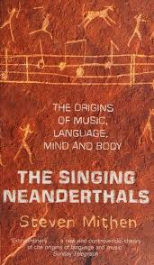

Dilden Önce Şarkılar Vardı — Müziğin Doğuşu ve Hmmmmm Teorisi
Yazar: Mert Güzel

Müziğin nasıl ortaya çıktığı asırlardır tartışılan bir konu. Antik Dünya'da müziğin tanrılar tarafından insanlara verilen, tanrılara tapınmak için kullanılacak ve kozmolojik sırları içinde barındıran bir hediye olduğu düşünülüyordu. Müziğin insandan gelen bir kökeni yoktu. Fakat Aydınlanma Dönemi ile birlikte bu düşünce değişti. İnsanlık, dini açıklamalardan uzaklaşıp kendi aklı ile düşünmeye başladığında, hayatımızın her yerinde olan müziğin kökeninin ne olduğu da sorulması gereken bir soru haline geldi.
Bu teoriler başlangıçta müziğin kökenini daha temel noktalardan ele aldılar ama günümüze geldiğimizde bu konuyla ilgili çok detaylı, içinde birden fazla disiplinin çalışmalarını barındıran pek çok kapsamlı teorinin ortaya çıktığını görüyoruz. Bugün size bu teoriler arasında önemli yeri olan Hmmmmm Teorisi'nden bahsedeceğim.
Hmmmmm teorisi ilk kez arkeolog Steven Mithen'in The Singing Neanderthals isimli kitabında karşımıza çıkıyor. Teorinin temeli Neandertallerle ilgili enteresan bir bulguya dayanıyor. Neandertaller, atalarından büyük beyinlere sahip. Bu da antropologların uzun yıllar boyunca bunun bir dil kapasitesini gösterdiğini düşünmesine sebep oldu. Mithen ise Neandertallerin bir dile değil, gelişmiş bir iletişim sistemine sahip olduğunu düşünüyordu. Bu sisteme de Hmmmmm ismini verdi. Hmmmmm bu sistemin özelliklerini açıklayan bir kısaltma.
Holistik (Bütünsel): Bu sistem müzik veya dil, duygu veya anlam gibi ayrımlar olmadan pek çok anlamı tek bir vokal jestle verebiliyor.
Multi-Modal: Ses, jest, yüz ifadesi, beden hareketi gibi farklı kanalları aynı anda kullanıyor.
Manipülative: Etrafındaki diğerlerinin hareketlerini etkilemek için kullanılıyor.
Müzikal: Bu iletişimin müzikal özellikleri olduğunu belirtiyor: farklı perdeler, ritim, tekrar gibi.
Mimetik: Sistemin taklit etmeye dayalı olduğunu söylüyor.
Teoriye göre Neandertaller bu iletişim sistemini, duygularını anlatmak, avlanmak, çiftleşmek, ölüsünü gömmek, alet yapmak gibi hayatının her alanında kullanmıştır. Homo Sapiens'e geldiğimizde ise bu gelişmiş iletişim sisteminin içinden zamanla, doğal seçilim ile dil oluşmuştur. Hmmmmm ile dil arasındaki fark ise her şeyin belirli bir kelimeye karşılık gelmesi ve bu yolla bilgi değişiminin çok daha kolay yapılabilmesi.
Dil geliştikten sonra bu bahsettiğimiz Hmmmmm sistemi artık yalnızca duygu ifade etmek için kullanılıyor ve bundan da müzik ortaya çıkıyor. Yani yine iletişime yarayan müzik, artık duyguları ifade etmek için temel araç haline geliyor.
Yine Mithen'a göre dilin oluşması dini düşünce sisteminin oluşmasının da temelini oluşturuyor. Dini düşünce sistemi ilk defa Homo Sapiens'te görülüyor. Bu dini, doğa üstü varlıklarla konuşmak ta müzik üzerinden gerçekleşiyor.
Müzik artık hayatta kalmak için bir gereklilik olmadığından her kültürde farklı bir şekilde gelişiyor. Ve müziğin insanlar arasında sosyal bağ kurma özelliği daha temel bir hale geliyor. Bu da müziğin ritüeller ve dini törenlerdeki yerini açıklıyor.
Sonuç Olarak
Mithen'ın bu teorisi 2005'te akademiye sunulduğunda hızlı bir şekilde müziğin kökeni hakkındaki tartışmalarda kendine önemli bir yer edindi. Pek çok çalışmada bu teori detaylandırıldı, değişikliklerle yeniden sunuldu veya farklı açılardan karşı çıkıldı ama bu teori hala müziğin kökeni hakkındaki tartışmalar için önemli bir referans kaynağı olmaya devam etmekte.
Kaynakça
Mithen, S. (2005). The Singing Neanderthals: The Origins of Music, Language, Mind and Body. Weidenfeld & Nicolson.
Görsel 1: Arkeolojik Arşivler / Kamu Malı (Public Domain)